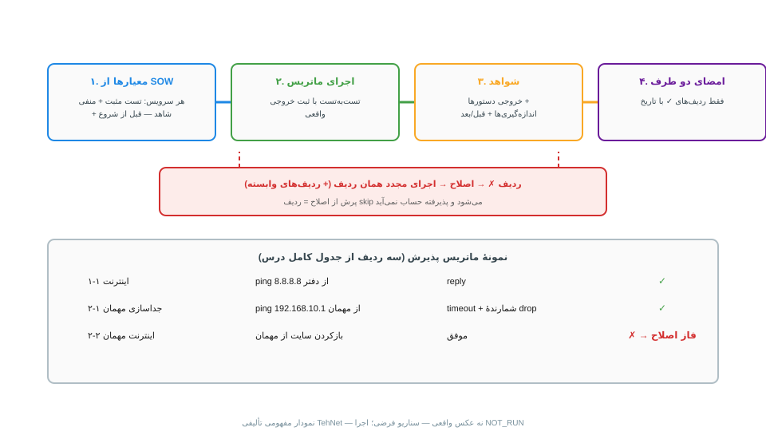

وضعیت درس: DRAFT / NOT_DEPLOYED — در انتظار مرور.
آموزش تصویری از سری پشتیبانی و پذیرش؛ مخاطب: مدیر کسبوکار + کارشناس شبکه.
سناریوی کاملاً فرضی و آموزشی با دادهٔ ساختگی؛ هیچ شبکهٔ واقعی دستکاری نشده و هیچ اجرای واقعی NOT_RUN است.
نمودار مفهومی و تألیفی است (نه عکس واقعی).
پذیرش تحویل یعنی: هر سرویسِ اعلامشده در قرارداد/پیشنهاد، با یک تست مثبت (باید کار کند) و یک تست منفی (باید بسته بماند) روی همان محیط اجرا و شاهدش ثبت شود — خروجی دستور یا اندازهگیری، نه «چشمبسته امضا». چیزی که تست نشده یا معیارش از قبل نوشته نشده، پذیرفتهشده حساب نمیشود؛ و تست منفی هموزن تست مثبت است: جداسازی مهمان که فقط «اجازه» تست شده باشد، ثابت نکرده مهمان به شبکهٔ داخلی هم نمیرسد.
| بند | محتوای اعلامشده (SOW فرضی) | الگوی تست از سری |
|---|---|---|
| سرویس ۱ | اینترنت برای همهٔ کاربران | M2 تستهای ۱/۹ |
| سرویس ۲ | چهار VLAN با جداسازی (دفتر/دوربین/تلفن/مهمان) | M2 جدول سیاست + تستهای ۲-۴/۸-۱۰ |
| سرویس ۳ | DHCP و نامهای داخلی | M3 تستهای ۱-۴ |
| سرویس ۴ | PoE برای دوربین/تلفن با بودجهٔ محاسبهشده | S2 روش پنجمرحلهای |
| سرویس ۵ | لینک 10G رک-سرور | S3 انتخاب/اجرای ماژول |
| خارج از دامنه | سرور فیزیکی، بکاپ سرور، Wi-Fi | خارج از چکلیست پذیرش — فقط ثبت میشود |
قاعدهٔ کلیدی: چکلیست پذیرش از SOW ساخته میشود نه از «چیزهایی که نصب شد». هر سرویس اعلامشده = حداقل یک تست مثبت + یک تست منفی + شاهد.
| # | سرویس | تست | انتظار | شاهد ثبتشونده | نتیجه |
|---|---|---|---|---|---|
| ۱-۱ | اینترنت | از کلاینت دفتر `ping 8.8.8.8` | reply | خروجی دستور با تاریخ | ☐ |
| ۲-۱ | جداسازی مهمان | از پورت مهمان `ping 192.168.10.1` | timeout | خروجی + شمارندهٔ drop input | ☐ |
| ۲-۲ | جداسازی مهمان | از پورت مهمان بازکردن سایت | موفق | — | ☐ |
| ۳-۱ | DHCP/Naming | `nslookup nas.lan` از کلاینت دفتر | 192.168.88.10 | خروجی | ☐ |
| ۴-۱ | PoE | جمع demand ≤ بودجه؛ monitor هر پورت | زیر سقف | خروجی monitor | ☐ |
| ۵-۱ | 10G | لینک SFP+ سرور/NAS با ماژول انتخابی S3 | 10G link | `/interface ethernet monitor` | ☐ |
| ۶-۱ | مدیریت | WinBox از مهمان | رد | خروجی/شمارنده | ☐ |
ردیفهای ۱-۱ و ۲-۱/۲-۲ جفت «مثبت+منفی» را نشان میدهند؛ برای هر سرویس مشابه تکمیل میشود.

شرح متنی نمودار (جایگزین تصویر برای دسترسپذیری): چهار فاز از چپ به راست: «۱. معیارها از SOW» (قبل از شروع، هر سرویس = تست مثبت + منفی + شاهد) → «۲. اجرای ماتریس» (تستبهتست با ثبت خروجی) → «۳. شواهد» (خروجی دستورها، اندازهگیریها، قبل/بعد) → «۴. امضای دو طرف» (فقط برای ردیفهای ✓). زیر نمودار: ردیفهای ✗ به فاز ۲ برمیگردند (اصلاح و اجرای مجدد همان ردیف). برچسب «تألیفی/مفهومی».
# قبل از شروع تغییرات پذیرش:
/system backup save name=pre-acceptance
/export file=pre-acceptance| سند | محتوا |
|---|---|
| config export نهایی | خروجی متنی پیکربندی نهایی (بدون پسوردها — رمزها خارج این سند در مدیر رمز) |
| نقشهٔ توپولوژی | پورتبهپورت با VLAN/آدرسها |
| جدول آدرسدهی و رزروها | مشابه جدول درس M3 |
| ماتریس پذیرش تکمیلشده | همهٔ ردیفها ✓ با تاریخ/شاهد |
| گزارش تغییرات | قبل/بعد هر اصلاح حین پذیرش |
| راهنمای عملیات پایه | روش backup/restore و مسیر عیبیابی اولیه (ارجاع N1) |
قید داده: هیچ رمز، دادهٔ مشتری یا توپولوژی واقعی محرمانه در این اسناد آموزشی نمیآید.
| خطا | چرا گران است | درست |
|---|---|---|
| امضای کور («کارش میکنه دیگه») | بعداً هر ایراد = اختلافبرانگیز | معیار قبل از اجرا نوشته و ماتریس اجرا شود |
| فقط تست مثبت | جداسازی/بستنها اثبات نمیشوند | هر policy جفت مثبت+منفی |
| تست فقط از یک VLAN/یک دستگاه | خرابی بخشهای دیگر پذیرفته میشود | نمونهگیری از همهٔ بخشهای اعلامشده |
| پذیرش بدون معیار در قرارداد | «درست بودن» برداشت سلیقهای میشود | معیارها ضمیمهٔ قرارداد؛ چکلیست از آن ساخته شود |
| حذف حاشیهٔ امن برای قبولشدن (مثل بودجهٔ PoE) | فردا با رشد، سقف میزند | حاشیهٔ سندشده دستنخورده؛ کسری = ردیف اصلاح |
| اشتباهگرفتن timeout سیاستی با خرابی | policy عمدی را خراب گزارش میکند | سیاست را بخوانید (الگوی N1 و M2/M3) |
| پیوند | مقصد |
|---|---|
| الگوهای تست | M2 · M3 · S2 · S3 · N1 |
| نقشهٔ کامل سری | topic map |
| اجرا و پذیرش پروژهٔ شبکهٔ شما | خدمات راهاندازی شبکهٔ تهران |
| پشتیبانی پس از تحویل | خدمات پشتیبانی شبکهٔ تهران |
| درس بعدی سری | N2 — مانیتورینگ و نگهداری دورهای (تولید در نوبت بعدی؛ فعلاً فقط در topic map) |